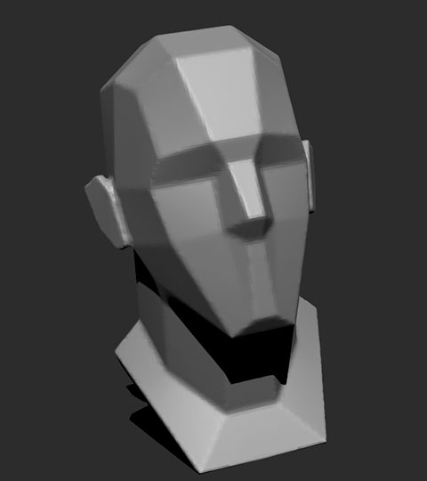
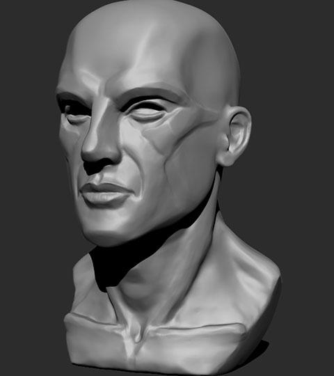
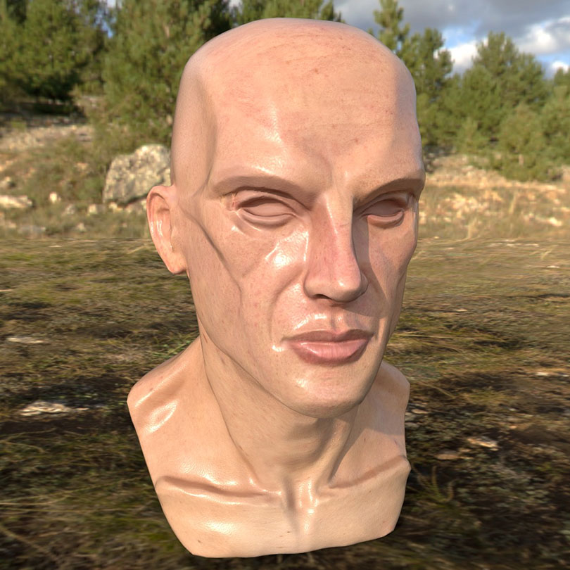
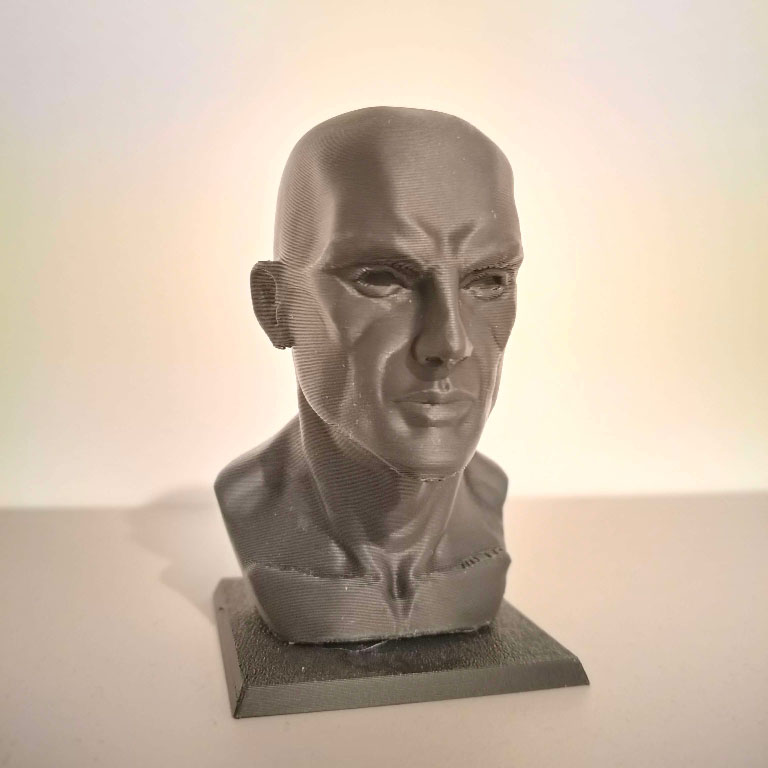

These assets were created in the Modelling and Texturing assignment from September 2024 to January 2025.
The first stage in creating a stylised human sculpt is the blocking out phase, this is done by placing primitives inside ZBrush and deforming them using the move brush.
Having a block-out phase ensures that the anatomy is correct before any detail is added.
After that, the primitives are combined using Dynamesh and additional details can be added using the various sculpting brushes.
In my case, the musculature of my sculpt was far too defined and I needed to use the smooth brush to hide it.
In order to build the required muscle memory, I created different speed sculpts of a human face, starting from the ZBrush base mesh.
The tools used for these sculpts were Clay Buildup, Move, Dam Standard and Polish.


After sculpting the head I used ZRemesher to create a low-poly version, which I UV unwrapped using Maya and Blender.
I textured the head in Substance Painter using Projection Painting and a skin texture, I also used a triplanar projection to add a bump map to the skin for the pores.
Normal map details were baked from the High-Poly mesh to the mesh being painted on.

